Chapter 1. 고전 암호 기술¶
0절. 암호학 기초
1절. 대칭형 암호
2절. 암호 공격
3절. 고전 암호
4절. 스테가노그라피(Steganography)
0절. 암호학 기초¶
대칭형 암호(Symmetric Encryption)¶
- 일반적인 / 비밀 / 단일 키 암호
- 1970년대 공개 키 암호호화가 발명되기 이전의 유일한 암호화 유형
- 두 가지 암호화 유형(비대칭형과 대칭형) 중 가장 널리 사용되는 암호화 유형
- 발신자와 수신자가 공통 키 공유
- 모든 기존 암호화 알고리즘은 대칭
대칭형과 비대칭형¶
| 용어 | 번역 | 특성 | 키의 개수 |
|---|---|---|---|
| Non-Symmetric | 비대칭형 | 보내는 사람과 받는 사람의 암호 불일치 | 2 |
| Symmetric | 대칭형 | 보내는 사람과 받는 사람의 암호 일치 | 1 |
암호학 기본 용어¶
| 용어 | 의미 | 번역 | 의미번역 |
|---|---|---|---|
| plaintext | original message | 평문 | 암호화되기 이전의 정보 |
| ciphertext | coded message | 암호문 | 암호화된 후의 정보 |
| cipher | algorithm for transforming plaintext to ciphertext | 암호 | 보안을 위해 사용되는 방법 |
| key | info used in cipher known only to sender/receiver | 키 | 암호를 해독하기 위해 필요한 해 |
| encrypt(encipher) | converting plaintext to ciphertext | 암호화 | 평문을 암호문으로 암호화 |
| decrypt(decipher) | recovering plaintext from ciphertext | 복호화 | 암호문을 평문으로 복호화 |
| cryptography | study of encryption principles/methods | 암호학 | 암호 디자인 |
| cryptanalysis(codebreaking) | study of principles/methods of deciphering ciphertext without knowing key | 암호분석학 | 암호 분석(공격) |
| cryptology | field of both cryptography and cryptanalysis | 암호학 | 암호에 대한 모든 학문 |
1절. 대칭형 암호¶
대칭형 암호 모델(Symmetric Cipher Model)¶
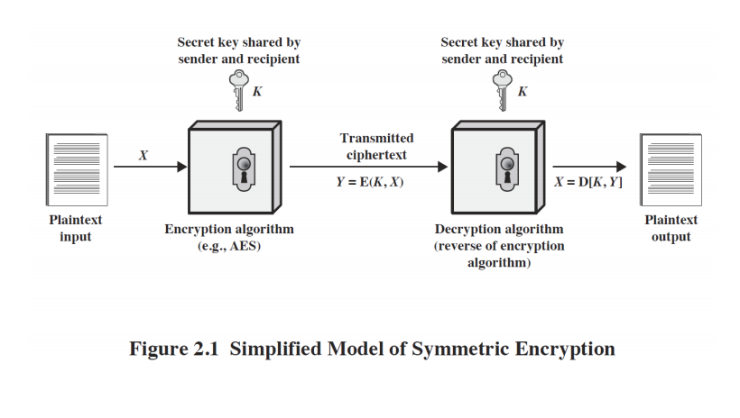
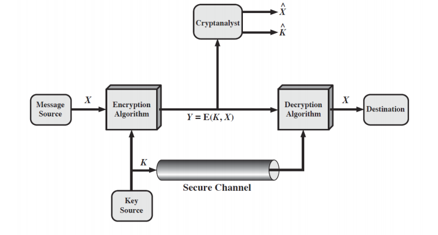
- Secure Channel은 키 값을 보내는 안전한 채널
Kerckhoffs의 원리¶
- 19세기 후반의 Auguste Kerckhoffs
- 누구나 암호화 알고리즘에 대해 인지하고 있고 key의 안전도에만 영향을 받도록 설정
- 공격자가 key의 설계도를 알아도 정작 key가 없다면 암호를 해결할 수 없어 암호의 안전이 완성되는 것
- 왜 이런 생각을 했을까?
- 암호화 알고리즘이 모두가 다 알고 있더라도 풀지 못하게 만들어야 보안이 유지되기 때문
- 누구나 암호화 알고리즘에 대해 인지하고 있고 key의 안전도에만 영향을 받도록 설정
2절. 암호 공격¶
공격 종류¶
-
암호분석학 공격(Cryptanalytic attacks) |용어|의미| |:---:|:--| |Ciphertext-only attack|암호문만 공격(일반적, 보편적인 공격)| |Known-plaintext attack|알려진 평문 공격(암호화의 내역이 유출된 경우)| |Chosen-plaintext attack|선택한 평문 공격| |Chosen-ciphertext attack|선택한 암호문 공격|
- 선택한 평문(또는 암호문) 공격(Chosen-plaintext(or ciphertext) attack)
- 자신이 가지고 있던 평문(또는 암호문)에 대한 정보를 공부한 후 새로운 메시지로 해독하는 공격
- 공격자가 정보를 더 많이 얻었을 때 이뤄지는 공격이므로 공격자가 유리
- 선택한 평문(또는 암호문) 공격(Chosen-plaintext(or ciphertext) attack)
-
브루트포스 공격(Brute-force attacks)
- 물리적인 힘의 공격(무식한 방법이자 전수 조사)
- 브루트포스 알고리즘 - hcr3066님의 블로그 참고
- 예시 : 4자리의 암호(0000 ~ 9999)를 모두 시도해 암호를 얻는 방법의 공격
- 컴퓨터 대수를 높여 효율 증가
3절. 고전 암호¶
고전 암호의 종류¶
- 평문의 문자가 다른 문자나 숫자 또는 기호로 대체되는 경우
- 평문이 일련의 비트로 간주되는 경우
- 평문의 비트 패턴을 암호문 비트 패턴으로 바꾸는 작업 포함
- 예시 |용어|의미| |:---:|:--| |Caesar cipher|씨저 싸이퍼(씨저 암호)| |shift cipher|이동 암호(씨저 암호의 상위호환)| |Monoalphabetic ciphers|모노 알파벳 암호| |Polyalphabetic ciphers|폴리 알파벳 암호(모노 알파벳 암호의 상위호환)| |Vigenere cipher|비저네러 암호(폴리 알파벳 암호의 예시)| |One-time pad|원 타임 패드| |Transposition cipher|위치 변환 암호|
Caesar cipher(씨저 암호)¶
- 알파벳을 3칸씩 밀어서 사용
- 아래의 사진을 통해 3칸씩 밀린 형태의 암호 확인
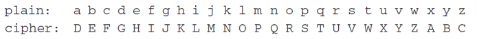
- 숫자로 나타낸 씨저 암호
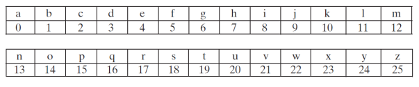
- 씨저 암호는 아래의 수식 형태를 유지
- 알파벳이 3칸씩 밀린 상태이기 때문에 숫자로 보낼 때도 \(±3\)을 해주는 형태
- 알파벳의 개수가 총 26이기 때문에 26으로 나눈 나머지의 값(mod 26)을 계산
- 예시
- 암호문으로 만들 때 3을 더하고, 받은 암호문을 평문으로 만들 때 3을 빼주는 형태
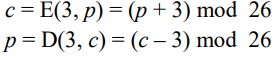
- 예시
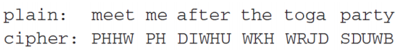
- 단점
- 알고리즘(몇 칸이 밀렸는지)을 발견하면 누구나 쉽게 해결 가능하므로 키가 없다고 취급 가능
shift cipher(이동 암호)¶
- 씨저 암호의 상위호환
- 이동 암호는 아래의 수식 형태 유지
- 키 값을 토대로 알파벳을 미는 횟수 결정
- 알파벳의 개수가 총 26이기 때문에 26으로 나눈 나머지의 값(mod 26)을 계산
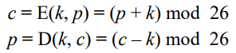
- 이동 암호 키 해독 방법
- 0 ~ 25까지의 키를 대입하면서 암호 해독 가능
- 키 값(key space)이 26(알파벳의 개수)이므로 쉽게 해독 가능
Monoalphabetic ciphers(모노 알파벳 암호)¶
- 암호의 짝을 임의로 결정하는 암호
- 일대일 대응의 원칙 수렴
- 만약 두 알파벳이 같은 값을 가리키는 경우 해독 불가
-
키 공간은 알파벳의 모든 순열로 구성
- 즉 키 공간의 크기는 26
- \(26! = 26·25·24···2·1(≈2^{88})\)
-
예시
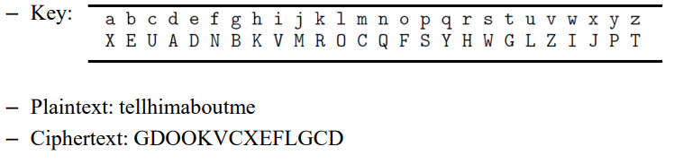
-
모노 알파벳 암호 키 해독 방법
- 일대일 대응의 형태이기 때문에 같은 알파벳이 위치한 곳을 유추하여 어느 알파벳인지 추정 가능
- 암호문이 긴 경우 찾아내기 매우 쉬음
- 많이 사용되는 알파벳이 아래 통계의 알파벳 비율을 따르므로 암호 해결 가능
- 알파벳의 언어학적 특성으로 해독
-
알파벳 통계
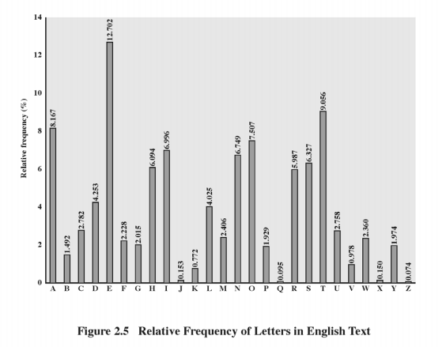
Polyalphabetic ciphers(폴리 알파벳 암호)¶
- 모노 알파벳 암호의 상위호환
- 더 많은 알파벳을 추측하고 빈도 분포를 추정하여 암호 분석을 어렵게 구성
- 키를 사용하여 메시지의 각 문자에 사용되는 알파벳 선택
- 키 끝에 도달한 후 처음부터 반복
Vigenere cipher(비저네러 암호)¶
- 폴리 알파벳 암호의 예시
- 여러 개의 이동 암호를 사용하는 형태로 자리마다 알파벳 미는 값을 불규칙적으로 설정
- 암호화 하려는 단어를 키로 선택한 후 평문 암호화
- 각 평문의 문자를 키의 다음 문자에 "추가"
-
언어학적 특성이 거의 없으며 알파벳 통계를 추정하면 일정한 분포 유지
-
예시
- 평문을 key 값만큼 미는 방식
- 같은 알파벳이지만(R) 다른 알파벳(D, N)을 표현
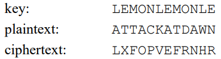
- 해독 방법
- 암호문의 같은 부분(최대길이)을 탐색하면 암호 해독 가능
- Kasiski의 방법
- 평문과 암호문에서 최대길이의 같은 부분이 존재할 경우 key의 반복 주기(key의 약수)를 탐색 가능
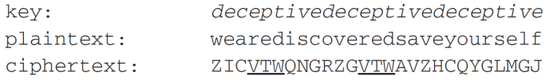
- 일반적인 비저네러 암호 해독 방법
- 1) 암호문에서 반복되는 부분(최대 길이)을 탐색하여 key의 반복 주기 추정
- 2) 1의 과정을 통해 key의 길이 추정
- 3) 2의 과정을 통해 알아낸 key의 길이로 열을 numbering
- 4) 이동 암호의 방식을 통해 알파벳 통계의 분석으로 해독
- 같은 열은 같은 문자로 밀리기 때문에 알파벳 통계의 분석에서 가장 높은 값이 key 값에 해당할 확률이 높음
One-time pad(원 타임 패드)¶
- 유일하게 해독 불가능한 암호학 방법
- 완전한 안전성 탑재
- 키가 암호문(메시지 길이)만큼 긴 형태
-
심각한 단점
- 키가 데이터의 크기만큼 생성되기 때문에 용량도 데이터만큼 필요
- 만약 1TB의 데이터를 전달하려고 하면 1TB의 키가 필요
-
예시
- 27자(26자 + 공백)의 비저네러 구성표
- 다른 문장임에도 불구하고 암호에 따라 암호문이 일치
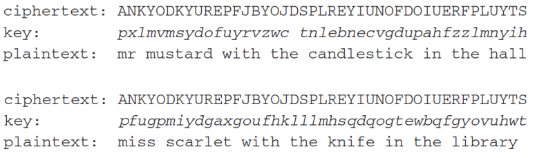
Transposition cipher(위치 변환 암호)¶
-
Rail fence cipher(레일 울타리 암호)
- 암호문의 형태는 변환되지 않고 순서만 변환
- 예시
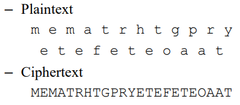
-
Columnar transposition cipher(열 위치 변환 암호)
- key의 숫자에 따른 열로 암호를 구성
- 예시
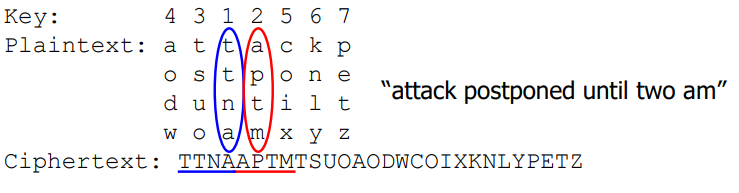
암호 생성¶
- 대입(치환) 혹은 위치 변환을 사용하는 암호는 언어학적인 특성으로 인해 불완전
- 안전한 암호를 위해 여러 암호의 연속적 사용 방법
- 두 번의 대입(치환)으로 치환 암호 생성
- 두 번의 위치 변환으로 치환 암호 생성
- 각 암호를 두 번씩 쓰는 암호보다 다른 암호를 한 번씩 교차로 사용할 경우 더욱 안전
- 왜 ?
- 어느 방법이던 두 번 쓰면 더 복잡해짐
- 하지만 결국 같은 방법을 두 번 사용한 것
- 때문에 두 가지 성질을 섞은 경우가 더 복잡하고 안전
- 왜 ?
- 고전 암호에서 현대 암호로의 발전
4절. 스테가노그라피(Steganography)¶
스테가노그라피¶
- 암호화의 대안으로 취급되며 타 암호화 방법과 같이 사용 시 더 안전하며 효율적
- 암호화와는 다르기 때문에 암호화 방법과 함께 사용되는 것
- 암호문을 주고 받은 사실 자체를 숨겨서 메시지의 존재를 숨기는 방식
- 숨기는 방식 예시
- 어떤 방식으로든 표시된 긴 메시지에서 문자 / 단어의 하위 집합만 사용
- 눈에 보이지 않는 잉크 사용
- 그래픽 이미지나 사운드 파일의 LSB에 숨겨놓기
- MSB(Most Significant Bit) 수정 : 큰 차이 발생
- LSB(Least Significant Bit) 수정 : 작은 차이 발생
- 숨기는 방식 예시
- 장점 : 암호화 사용이 모호해짐
- 단점 : 숨기고자 하는 데이터가 상대적으로 적은 정보 비트를 숨길 때만 사용